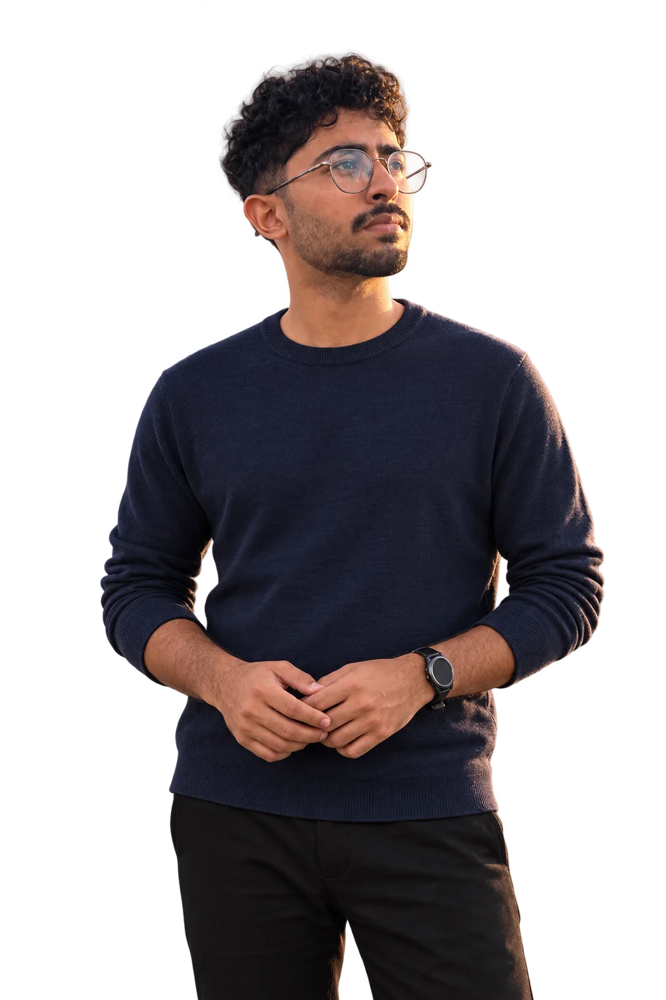
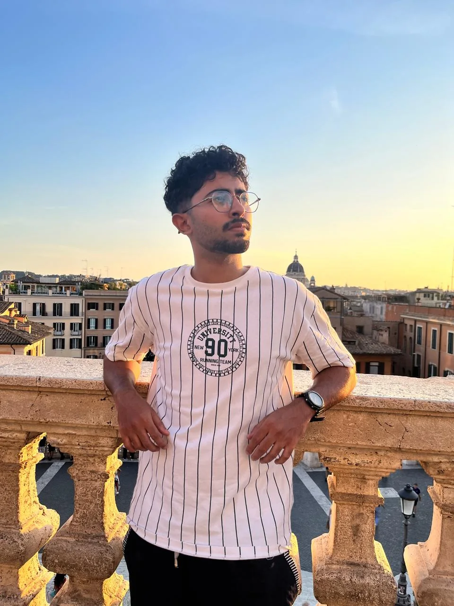

Joe Kanjirathingal — Data Science & Machine Learning

Based in
Thrissur, India
Data Science &
Machine Learning
Joe
Kanjirathingal
Turning data into models.
And ideas into things
you can use.
I'm Joe, an AI student exploring the space between machine learning, data and thoughtful software. I build, test, ask questions, and keep learning.
About meSelected work
Data, models & the webCurious by nature.
Hands-on by choice.

I'm Joe Kanjirathingal, an Artificial Intelligence student based in Thrissur, Kerala.
I like taking an idea all the way from a notebook to something people can explore. My projects span NLP, model evaluation, retrieval, public-data dashboards and full-stack web applications.
I'm completing my B.Tech at Vidya Academy of Science and Technology and taking Python full-stack training at SMEClabs, Kochi.
I'm looking for Data Science, Machine Learning and Data Analyst internships where I can contribute, ask better questions and learn from an engineering team.
More about me on LinkedInMachine learning
scikit-learn · PyTorch
NLP · Embeddings · Retrieval
Model evaluation · Calibration
Data & analysis
Python · SQL · NumPy
Data visualization · GIS
Dashboards · Source checks
Building applications
FastAPI · SQLite
React · TypeScript
PostgreSQL · GitHub · Vercel
Always a student.
The foundations behind the projects.
Expected graduation
B.Tech, Artificial Intelligence
Vidya Academy of Science and Technology
September 2023 – March 2027Six-month training
Python Full-Stack Development
SMEClabs, Kochi
Professional training alongside my degree